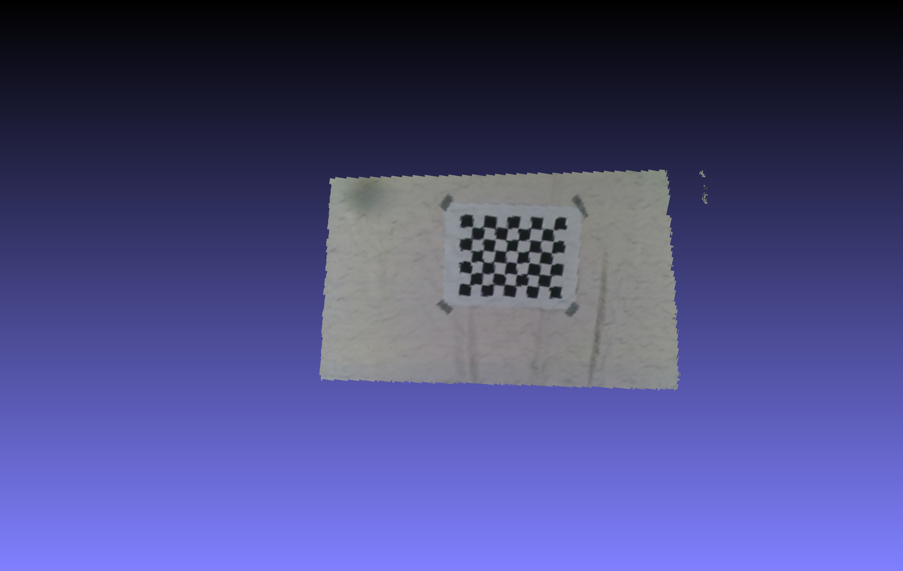

OH-MIND Lab Research
Simulation and Prototype Workflow Notes
This page documents OH-MIND Lab robotics work through visuals that can be shown publicly. The notes stay qualitative and avoid publication, submission, or measured-performance claims that are not verified here.

